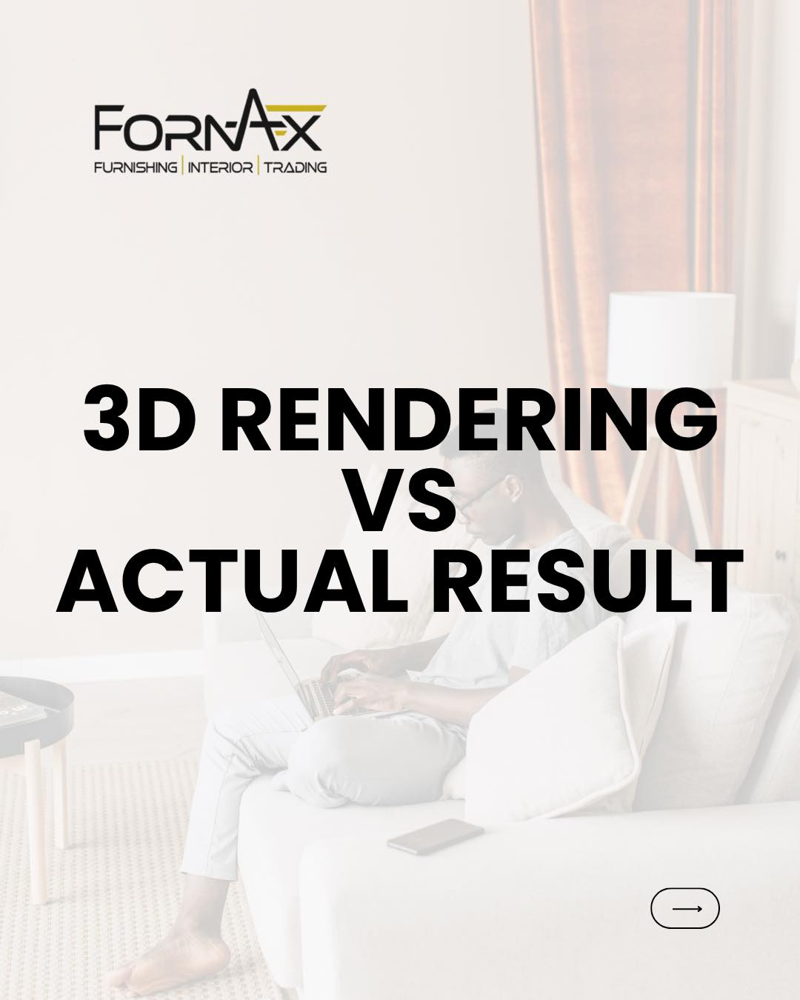

Listen & understand
We begin with a conversation about your home, priorities, timeline and the way you want to live.
From first thought to final fit
A good renovation needs a clear plan. We keep the journey collaborative, thoughtful and focused on what matters in your home.
02 — THE JOURNEY
We connect design thinking with renovation know-how so the finished space stays rooted in the original vision and the practical needs of the household.
We begin with a conversation about your home, priorities, timeline and the way you want to live.
Explore layouts, design direction, materials and visualisations, with decisions shaped around the brief.
Bring the plan to site with renovation coordination, custom carpentry and attention to the details.
Complete the finishing touches and prepare your new space for everyday living.
Design and renovation expertise in one considered journey.
Space planning, 3D visualisation, material direction and design details.
Renovation coordination and finishing, with clear communication along the way.
Purposeful storage, kitchen cabinetry and feature walls tailored to your home.
Ready when you are